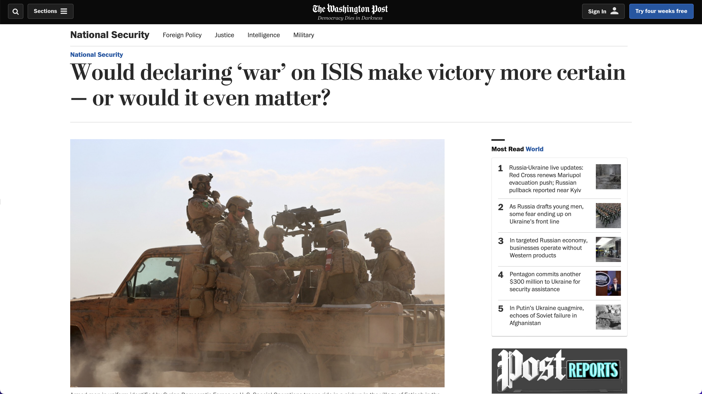
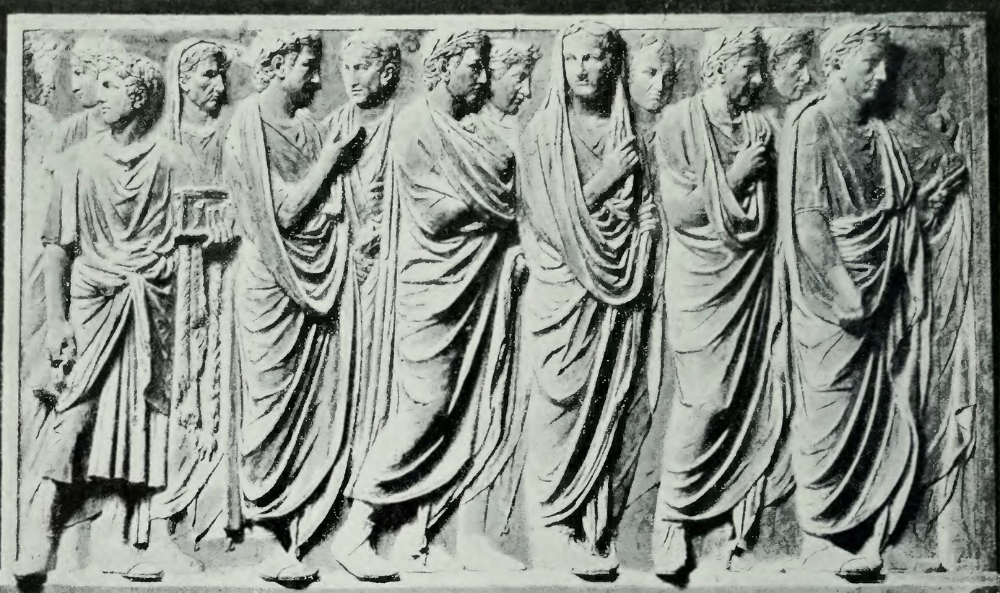
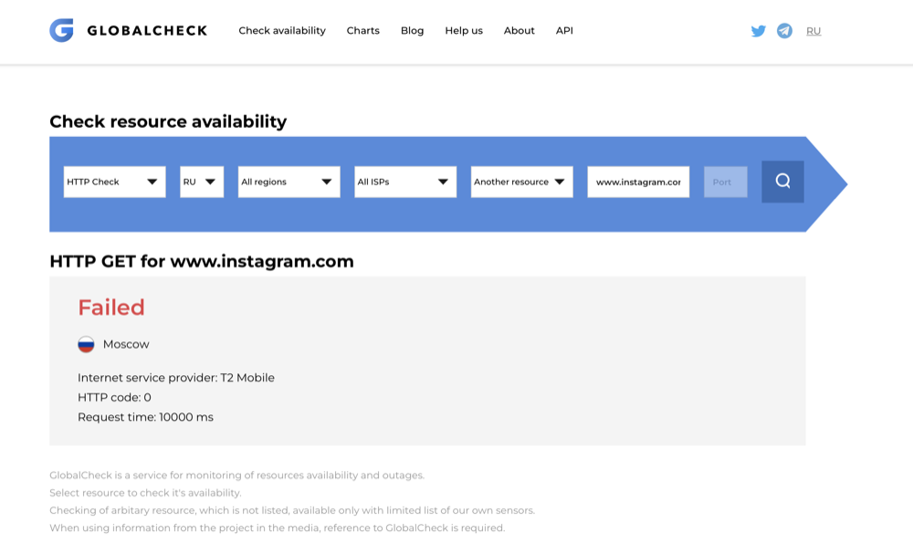
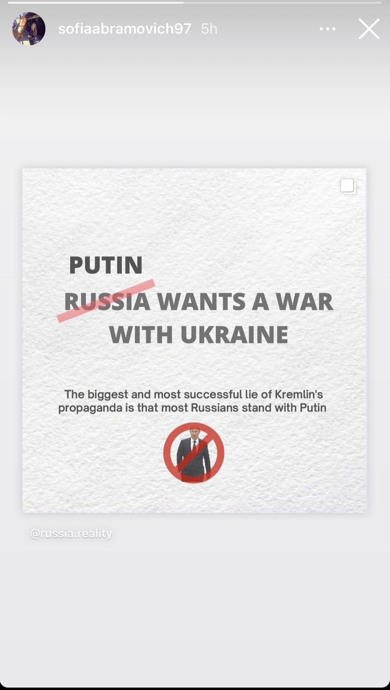
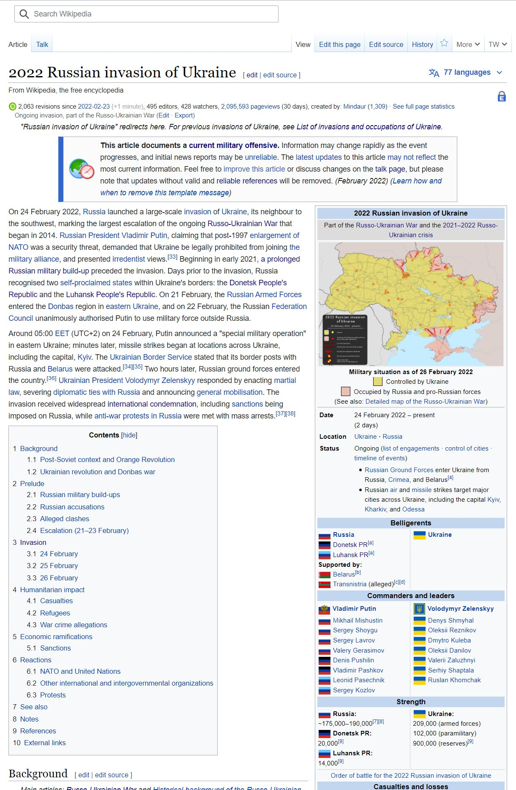

Paolo Vigliotti
Royal Academy of Art, Den Haag
)
)
)
)
)
)
)
)
)
)
)
)
Introduction
In 2016, The Washington Post published a story titled “Would declaring ‘war’ on ISIS make victory more certain—or would it even matter?”
 Source ↪
One of its central points was that today, “most legal scholars find a war declaration irrelevant”. The author quotes Curtis Bradley, co-director of the Center for International and Comparative Law at Duke University, who said that “declaring war does not serve any real function under modern international law, and it is not required as a matter of U.S. constitutional practice in order to wage war”.
If we look at the data it becomes immediately evident that, for multiple reasons,
As noted by Tanisha Fazal, in the nineteenth century and in the first half of the twentieth century, almost half of all international wars were preceded by declarations of war. On the contrary, from 1950 “the number of wars accompanied by declarations declined dramatically—to three” (558). According to some scholars, one of the reasons for this decline may be that with the introduction of nuclear weapons, major international wars have almost disappeared (van Crevald 97). Furthermore, the United Nations mostly eliminated the need for states to declare war on each other, while the rising costs associated with openly declaring war are another factor noted by Fazal (569),
declarations of war have in facts mostly fallen into disuse since World War II.
A report by the Congressional Research Service, titled “Declarations of War and Authorizations for the Use of Military Force: Historical Background and Legal Implications” says “declarations of war may have become anachronistic in contemporary international law,” (Elsea and Weed 23) but also contradicts itself by affirming that “states likely still retain a right to issue declarations of war, at least in exercising the right of self-defense; and such a declaration seemingly would still automatically create a state of war” (Elsea and Weed 23); on the other hand, according to a U.S. Department of Defense Law of War Manual, “it becomes essential to know whether or not a state of war exists at a given point of time” (18) because, as “most of the Hague Conventions only come into operation once a state of war has arisen” (18), the existence or non-existence of a “state of war” determines whether a law of war regime is in act or not.
There are also cases where a declaration of war, even if apparently defensible, could be counterproductive.
For example, responding to a New York Times editorial that criticized the U.S. Congress for its “willingness to abdicate one of its most consequential powers: the authority to declare war” against the Islamic State, Tanisha Fazal states:
A major reason states do not declare war upon non-state actors is because doing so would accord these actors the very legitimacy, rights, and status that states are fighting to keep them from gaining. We observe this most easily in civil wars, where rebel groups might declare war upon states, but states tend not to reciprocate, instead labeling rebels as criminals or terrorists.
(The US Won’t Declare War on ISIS)
According to the authors Giorgio Agamben and Achille Mbembe, the decrease in explicitly declared wars is linked to a rise in governments that operate permanently under a state of exception.
The concept was introduced in the 1920s by the German philosopher and jurist Carl Schmit. “In Schmitt's terms," writes Masha Gessen, when an emergency "shakes up the accepted order of things[...] the sovereign steps forward and institutes new, extralegal rules.” (22)
“The emergency enables a quantum leap: Having amassed enough power to declare a state of exception, the sovereign then, by that declaration, acquires far greater, unchecked power. That is what makes the change irreversible, and the state of exception permanent.”
(22-23)
Which mirrors what Agamben wrote in State of Exception:
“Faced with the unstoppable progression of what has been called a global civil war, the state of exception tends increasingly to appear as the dominant paradigm of government in contemporary politics. […] from this perspective, the state of exception appears as a threshold of indeterminacy between democracy and absolutism.”
(10).
For Mbembe war is an “end and necessity not only in democracy but also in politics and in culture.” It’s our pharmakon, “both remedy and poison” at the same time:
Under contemporary conditions, the societies of the North are not left unscathed by this planetary renewal of colonial relations and their multiple reconfigurations, all of which is only amplified through the war on terror and the global-scale creation of a “state of exception.”
(11-12)
Amid widespread contemporary uncertainties and with such a diversity of available opinions and points of views, it’s almost impossible to reach any useful conclusion or judgement on the act of declaring war without first trying to understand its history, its functions, and its implications.
History
The act of declaring war has a long historical tradition.
Clyde Eagleton traces the origins of the idea in the conventions of sportsmanship, which held the principle that one should warn their adversary before an attack (19).
It is referenced in the Epic of Gilgamesh (dated between 2000 and 1200BC) and in the Bible (Hallet 65, 155), and the Roman Republic had even a specific type of priest, the Fetial
Relief of Roman Fetiales
, whose functions were entirely dedicated to the ritual of war declaration (Philipson 197-202).
The practice continued during the Middle Ages,probably influenced by the ideals of chivalry and knighthood, and by the practice of the challenge in dueling – which had more than one similarity to the private wars of that time (Eagleton 20).
Unsurprisingly the declaration of this era was in the form of a challenge, to be emphatically delivered to the sovereign; later it started to be communicated through diplomatic channels, or published for everyone to read (Philipson 201). Hugo Grotius and Emer de Vattel, early international law writers, insisted on the importance of the declaration of war (qtd. in Eagleton 19); but later writers like Bynkershoek say that it was an “honorable, though not obligatory, custom” (qtd. in Eagleton 20).
During the 18th and 19th centuries an almost total disregard for the practice of issuing declarations meant at least 107 cases of undeclared war, while there were only ten times in which war was declared (Brevet and Maurice 4-7).
However, toward the end of the 19th century, the practice started to become popular again, influenced by the recommendations of the Institut de Droit International, which were adopted without much change at the Second Hague Conference in 1907.
The third Convention
Source ↪, which was signed at this conference, states:
Considering that it is important, in order to ensure the maintenance of pacific relations, that hostilities should not commence without previous warning;
That it is equally important that the existence of a state of war should be notified without delay to neutral Powers;
Article 1
The contracting Powers recognize that hostilities between themselves must not commence without previous and explicit warning, in the form either of a reasoned declaration of war or of an ultimatum with conditional declaration of war.
Article 2
The existence of a state of war must be notified to the neutral Powers without delay, and shall not take effect with regard to them until after the receipt of a notification, which may, however, be given by telegraph. Neutral Powers, nevertheless, cannot rely on the absence of a notification if it is clearly established that they were in fact aware of the existence of a state of war.
In the years between the Crimean War (1853–56) and the first World War (1914–18), a declaration of war was the rule, but a rule that was, according to Eagleton, “not always adhered to” (19). As previously noted, around half of all international wars were preceded by declarations of war. In contrast, from 1950 on “the number […] declined dramatically—to three.” (Fazal 558).
So, it might be possible to agree with Eagleton that there is some kind of “rule of customary international law to the effect that war must be declared” (21). But in reality, it’s difficult to say what this means: is a war without a declaration illegal? Or, if it is not declared, it is not a war, and so it can’t be illegal? There was no declaration of war between Japan and China, nor between the United States and Vietnam or Korea. Nor, as we have briefly discussed, has a war on ISIS ever been officially declared. Were they, under the Hague Convention, illegal wars? Were they even wars at all? And in such a situation, what should be the role of the other “neutral” states?
The situation has obviously changed since the Hague Convention.
World War II left the world devastated, and lead to war being declared illegal or quasi-illegal in modern treaties: the UN Charter explicitly bans the use of force by states.
All members shall refrain in their international relations from the threat or use of force against the territorial integrity or political independence of any state, or in any other manner inconsistent with the purposes of the United Nations.
It becomes very important, then, to know what war is in the first place: if these restrictions apply only to declared wars, (since, under the convention, the other wars aren’t “wars” because they’re not declared) it means they have almost no effect, “for it would be absurd for a state to declare war when by its mere failure to do so it would be absolved from the guilt of having carried on illegal war” (Eagleton 21).
What is required for a law of war regime to apply? Article 2 of the Geneva Conventions states that it applies “to all cases of declared war or of any other armed conflict which may arise between two or more of the High Contracting Parties, even if the state of war is not recognized by one of them
Convention for the Amelioration of the Condition of the Wounded and Sick in Armed Forces in the Field, Article 2,
Source ↪.”
What exactly constitutes “other armed conflicts” depends on interpretation, but most traditional scholars “insist that an international armed conflict (i.e., between two or more nations) arises when there is “[a]ny kind of use of arms between two States.” (ICRC Paper qtd. in Dunlap). Unfortunately, even the terminology is not exactly unambiguous: in the Treaty of Versailles of 1919 we find expressions like "external aggression," "threat of war," "dispute likely to lead to rupture," "resort to war," "act of war," etc., and later agreements introduced phrases as "recourse to war," "disputes or conflict of whatever nature or origin," "event of war," "virtual state of war," etc. (Wilson 100-101). As for declarations, it’s not only possible to declare war, but also to recognize the existence of a state of war or to declare the existence of a state of war. Further research only reveals more confusion as to what exactly the purpose, the form, and the implications of a declaration of war are.
The Declaration In 2011, George Friedman stated what a declaration of war achieves in the legal framework of the United States: First, it holds both Congress and the president equally responsible for the decision, and does so unambiguously. Second, it affirms to the people that their lives have now changed and that they will be bearing burdens. Third, it gives the president the political and moral authority he needs to wage war on their behalf and forces everyone to share in the moral responsibility of war. And finally, by submitting it to a political process, many wars might be avoided... A declaration of war both frees and restrains the president, as it was meant to do George Friedman, What Happened to the American Declaration of War?, Geopolitical Weekly (Mar. 29, 2011), Source ↪ . In short, the declaration of war creates the legal status of war. The declaration establishes a state of war, but what constitutes a declaration of war? A declaration of war is usually a formal proclamation issued on behalf of a state. As we saw, according to the Hague Convention, it should be "in the form either of a reasoned declaration of war or of an ultimatum with conditional declaration of war" and it “must be notified to the neutral Powers without delay, and shall not take effect with regard to them until after the receipt of a notification”. From a linguistical and philosophical point of view, we might say that a declaration of war is a performative speech act issued in order to create an institutional fact (the state of war) between two or more states. We see at once the immense power of language and human social reality: a series of words can create both facts about reality and justify their existence. As John Searle says, “[declarations] change the world by declaring that a state of affairs exists and thus bringing that state of affairs into existence” (Searle 25). According to him, our social reality functions by implicitly accepting a series of constitutive rules, which can be expressed through declarations that have the underlying formula “fact X counts as Y in context C”; for example, in sports, the act of moving the pawn one square forward counts as a legal move in chess, or touching the ball with your hand counts as foul in soccer. The most famous cases of declarations are what John Austin called “performative utterances” (94–99). These are the times where “you make something the case by explicitly saying that it is the case” (Searle 26–27). So, we promise by saying, “I promise.” We apologize by saying, “I apologize.” Someone gives an order by saying, “I order” or “I command.” A president declares war by declaring (or, in this case, by asking the Congress to declare) that a state of war exists: I ask that the Congress declare that since the unprovoked and dastardly attack (X) by Japan on Sunday, December 7, 1941, a state of war (Y) has existed between the United States and the Japanese Empire (C). Speech by Franklin D. Roosevelt (411-12) While this specific declaration has now become inscribed into our collective mind, it doesn’t mean that historically all declarations have been of a similar kind; on the contrary, the form of the declaration has significantly changed through time. While in Rome it was delivered orally, by the Middle Ages it became a written notice that was delivered to the sovereign by a special messenger; and still later, in the 17th and 18th centuries, the notice was given through a printed proclamation, while in the 20th century it became common to broadcast declarations, initially through radio and later through television. Source ↪. It does not imply that war can exist only after a declaration (the contrary is often true), but the declaration itself is unconfutable evidence that the state of peace has been turned into a state of war (and that the law of war now replaces the law of peace). If there is so much doubt about what exactly constitutes a declaration of war, there is even more about the authority that can issue it. We can say almost certainly that a single individual cannot make a war (and consequently can’t issue a legal declaration), but when a number of individuals are grouped together, the situation becomes much less clear. Does the Islamic State even have a right to declare war? What if, in a war that is formally undeclared, a third state that is not part of the conflict proclaims itself neutral? Does that establish the existence of war? That’s what happened, when, during the American Civil War, some European states issued a proclamation of neutrality; and during the Italo-Ethiopian conflict “neither side having publicly declared war, the President of the United States issued a proclamation which asserted that a state of war existed between those states” (Eagleton 24). Can we go even one step further and speculate that declaring neutrality between a legitimate government and an insurgent rebellion, a state could turn the situation from rebellion into war? Generally, Western states explicitly name in their Constitution the political entity that may declare war. For example, under the Constitution of the United States, only the Congress can declare war, while the President is not allowed to. But the situation may be different in reality: if the President of the United States declared war against another state without approval from the Congress, there’s very little chance that the other state would not consider itself at war just because the procedures were not followed correctly. Through history the proclamation of a commander in the field has often been equivalent to a declaration of war, or is considered as causing the state of war itself: Greek independence was in fact due to the unauthorized action of naval commanders of the fleets which sunk the Turkish vessels at Navarino. […] Hostilities in the Austro-Prussian War of 1866 started with a proclamation by Prince Frederick Charles, who commanded the Prussian forces to enter the territory of the enemy on his own initiative. (Eagleton 24). To summarize, it seems that the only thing that we can be certain of is that a declaration establishes the legal status of war. It is not always clear what is to be regarded as a declaration or what political authority can issue it. In the next chapter, we will see how it’s often not even clear when it is to be considered as being in effect.
Functions
What are the functions of the declaration of war? The most obvious answer to this question is that it is important to establish a date on which the official transition from peace to war takes place. And yet scholars have revealed that in reality there’s no certainty of any kind about when a war begins, sometimes even where a declaration of war was issued.
For example, the French declaration of war against Austria, issued on May 3, 1859, said:
"Austria in causing her armies to enter the territory of the King of Sardinia, our ally, declares war against us", but the French troops were already advancing on April 23, “before any declaration, even before the date of the Austrian act which was offered by the French as the cause of the war” (Brevet and Maurice 231). When did this war begin? There’s no doubt that this question is even more relevant in the case of undeclared wars, but it’s evident that it still matters even where there is a declaration.
To complicate the matters, the date of the beginning of war can also be retroactively by courts.
It’s the case of The Boedes Lust, a Dutch vessel that had been seized by the British army a month before the declaration of war (Eagleton 31). From this and numerous other examples it’s clear that the declaration does not necessarily establish the time of the beginning of war:
If the declaration can be made after hostilities have begun, it serves no purpose of fair warning to the other state of impending attack. If it is intended to fix a date for the information of individuals, it is useless if retroactive; and if not retroactive, it is equally useless when courts can decree that it nevertheless has retroactive effect.
(Ibid.)
A simple explanation of the political functions of a declaration may be that it is issued for the purpose of informing the citizens, or calling them to arms, or to state the official reasons for the war.
This is actually indicated in the Hague Convention, which asks for a "reasoned declaration"; and often the state which is issuing the declaration uses the opportunity to argue in its own favour: since it is better to put the blame of the war on the other state, it is not rare to see declared not that a war is initiated, but that the war initiated by the opponent is accepted. This is usually the form of declaration used by the United States. For example, the declaration of war against Mexico issued on May 13, 1846, reads:
The Congress of the United States, by virtue of the constitutional authority vested in them, have declared by their act bearing date this day, that by the act of the Republic of Mexico, a state of war exists between that government and the United States.
That against Germany, on April 6, 1917:
Whereas the Imperial German Government has committed repeated acts of war against the Government and the people of the United States of America: Therefore, be it
Resolved by the Senate and the House of Representatives of the United States of America in Congress assembled, That the state of war between the United States and the Imperial German Government which has thus been thrust upon the United States is hereby formally declared; and that the President be, and he is hereby, authorized and directed to employ the entire naval and military forces of the United States and the resources of the Government to carry on war against the Imperial German Government; and to bring the conflict to a successful termination all the resources of the country are hereby pledged by the Congress of the United States.
And the one against Japan in 1941:
I ask that the Congress declare that since the unprovoked and dastardly attack by Japan on Sunday, December 7, 1941, a state of war has existed between the United States and the Japanese Empire.
This is not to say that the United States are unique in this behavior; other states in facts have done the same in their declarations:
In view of these wanton acts of unprovoked aggression committed in flagrant violation of International Law and particularly of Article I of the Third Hague Convention relative to the opening of hostilities, to which both Japan and the United Kingdom are parties, His Majesty's Ambassador at Tokyo has been instructed to inform the Imperial Japanese Government in the name of His Majesty's Government in the United Kingdom that a state of war exists between our two countries.
From a letter to the Japanese Ambassador by Winston Churchill
Official Report, House of Commons, 8 December 1941, 5th series, vol. 376, cols 1358–1359.
Although Germany on her part has strictly adhered to the rules of international law in her relations with the United States during every period of the present war, the Government of the United States from initial violations of neutrality has finally proceeded to open acts of war against Germany. The Government of the United States has thereby virtually created a state of war.
The German Government, consequently, discontinues diplomatic relations with the United States of America and declares that under these circumstances brought about by President Roosevelt Germany too, as from today, considers herself as being in a state of war with the United States of America.
German declaration of war against the United States, 1941
Lillian Goldman Law Library. “The Avalon Project: The German Declaration of War with the United States: December 11, 1941.”.
Declaring War Today On 24 February 2022, Vladimir Putin ordered to invade Ukraine, in what he called a “special military operation”. According to the official announcement, “the security and values of Russia in the post-Cold War world order was under threat” and military action was necessary “to protect the breakaway regions of Donetsk and Luhansk in eastern Ukraine from a Nazi-led genocide.” (Adetunji) The Internet response was unprecedented, and a brief analysis will be very interesting. Meta, the parent company of Facebook and Instagram, instituted a (temporary) change in its policy that allows users to post content that is usually forbidden on the platforms, including “calls for harm or even the death of Russian soldiers or politicians”. (Vincent) The message that the company sent to its moderators states: We are issuing a spirit-of-the-policy allowance to allow T1 violent speech that would otherwise be removed under the Hate Speech policy when: (a) targeting Russian soldiers, EXCEPT prisoners of war, or (b) targeting Russians where it’s clear that the context is the Russian invasion of Ukraine (e.g., content mentions the invasion, self-defense, etc.). A Meta representative stated: “As a result of the Russian invasion of Ukraine we have temporarily made allowances for forms of political expression that would normally violate our rules like violent speech such as ‘death to the Russian invaders.’ We still won’t allow credible calls for violence against Russian civilians.” In response, after banning Facebook, Russia officially banned Instagram on March 14th, making the platform inaccessible for most of its population. According to Adam Mosseri  Link↪ , the president of Instagram, the decision “cut 80 million in Russia off from one another, and from the rest of the world as ~80% of people in Russia follow an Instagram account outside their country.” It is obvious to ask whether the posts condemning the war by the daughter of billionaire Roman Abramovich, Sofia Abramovich, and banker Oleg Tinkov contributed to Russia’s Decision.  On March 2 Reuters reported Source ↪ that Russian authorities had threatened to block Wikipedia's Russian site because of an article that contained references to deaths between Ukrainian civilians and Russian forces that entered Ukraine, while defining the article "illegally distributed information". The English Wikipedia page  for the “2022 Russian invasion of Ukraine,” was created just a few minutes after Putin’s speech and more than 700 distinct authors contributed to its writing Source ↪. In February 2022, more than 22 million people read about Ukraine on the English Wikipedia compared to around 290,000 in February 2021. Other than the article for the invasion itself, there is a page on the 2014 Russo-Ukrainian War, a page titled “Prelude to the 2022 Russian invasion of Ukraine” and other pages about events like the “Attack on Snake Island” and the “Battle of Kharkiv”. Source ↪ According to Samuel Breslow, a veteran Wikipedia editor and journalist: “Wikipedia is the major collective record of humanity’s knowledge, and its articles are read by a staggering number of readers. They influence what people believe and how they live their lives, so it’s essential we make them as reliable, neutral, and comprehensive as possible.” (Harrison)
Conclusion To summarize, it seems that the more one researches about a declaration of war, the less certain one becomes. We do know some things : that declarations of war have mostly fallen into disuse since World War II; that a declaration of war creates the legal status of war (an unconfutable evidence that the state of peace has been turned into a state of war); that, even though it creates the legal status of war, it does not necessarily establish the time of the beginning of war; that it is issued partly for the purpose of informing the citizens, or calling them to arms, or to state the official reasons for the war; and that giving the reasons for the war is itself a way to put the blame of the war on the other state. From a linguistical and philosophical point of view, we have seen that a declaration of war is a performative speech act issued in order to create an institutional fact (the state of war) between two or more states. And yet our uncertainties are much greater There are doubts about what exactly can constitute a declaration of war and the authority that can issue it. We know that a single individual cannot make a war, but when a number of individuals are grouped together, the situation becomes much less clear. It is legally unclear whether the Islamic State even has a right to declare war. Although national and international laws and treaties precisely describe what constitutes a declaration of war and who can issue it, the reality is much more complicated than the law. Sometimes even the laws themselves are confusing: when one is faced with a multitude of different expressions like "external aggression," "threat of war," "dispute likely to lead to rupture," "resort to war," "act of war," "recourse to war," "disputes or conflict of whatever nature or origin," "event of war," "state of war," "virtual state of war," and so on, it's easy to get confused. The recent crisis in Ukraine complicated the matters even further, highlighting on one side the role that online platforms and social media have in shaping reality and our perception of it, and on the other side the importance of further research and clarification about the declaration of war.
Bibliography Agamben, Giorgio, and Kevin Attell. State of Exception. 1st ed., University of Chicago Press, 2005. Austin, J., and J. Urmson. How to Do Things with Words. Martino Fine Books, 2018. Creveld, Martin van. “The Waning of Major War.” The Waning of Major War: Theories and Debates, edited by Raimo Vayrynen, London, Taylor and Francis, 2013, pp. 97–112. DeYoung, Karen. “Would Declaring ‘War’ on ISIS Make Victory More Certain — or Would It Even Matter?” Washington Post, 16 July 2016, www.washingtonpost.com/world/national-security/would-declaring-war-on-isis-make-victory-more-certain--or-would-it-even-matter/2016/07/16/ed95f0aa-4b6c-11e6-acbc-4d4870a079da_story.html. Eagleton, Clyde. “The Form and Function of the Declaration of War.” American Journal of International Law, vol. 32, no. 1, 1938, pp. 19–35. Crossref, doi.org/10.2307/2190629. Elsea, Jennifer K., and Matthew C. Weed. “Declarations of War and Authorizations for the Use of Military Force: Historical Background and Legal Implications.” Congressional Research Service, 2014. Espósito, Filipe. “Apple Maps Now Says Crimea Is Part of Ukraine.” 9to5Mac, 4 Mar. 2022, 9to5mac.com/2022/03/03/apple-maps-now-says-crimea-is-part-of-ukraine-except-if-youre-in-russia. Fazal, Tanisha M. “Why States No Longer Declare War.” Security Studies, vol. 21, no. 4, 2012, pp. 557–93. Crossref, doi.org/10.1080/09636412.2012.734227. ---. “The US Won’t Declare War on ISIS.” Political Violence at a Glance, 16 Sept. 2014, politicalviolenceataglance.org/2014/09/16/the-us-wont-declare-war-on-isis. Gessen, Masha. Surviving Autocracy. Riverhead Books, 2021. Hallett, Brien. The Lost Art of Declaring War. University of Illinois Press, 1998. Harrison, Stephen. “How the Russian Invasion of Ukraine Is Playing Out on English, Ukrainian, and Russian Wikipedia.” Slate Magazine, 1 Mar. 2022, slate.com/technology/2022/03/wikipedia-russian-invasion-of-ukraine-edits-kyiv-kiev.html. Lillian Goldman Law Library. “The Avalon Project - Laws of War: Opening of Hostilities (Hague III); October 18, 1907.” The Avalon Project – Laws of War, avalon.law.yale.edu/20th_century/hague03.asp#art1. Accessed 18 Jan. 2022. ---. “The Avalon Project: The German Declaration of War with the United States: December 11, 1941.” The Avalon Project - Laws of War, avalon.law.yale.edu/wwii/gerdec41.asp. Accessed 18 Jan. 2022. Mbembe, Achille. Necropolitics (Theory in Forms). Duke University Press Books, 2019. North, John. “Fetiales.” Oxford Research Encyclopedia of Classics, 2016. Crossref, doi.org/10.1093/acrefore/9780199381135.013.6964. Office of General Counsel – Department of Defense. Department of Defense Law of War Manual. Washington, DC, General Counsel of the Department of Defense, 2015, info.publicintelligence.net/DoD-Law-of-War.pdf. Phillipson, Coleman. The International Law and Custom of Ancient Greece and Rome. London: Macmillan, 1911. Internet resource. Reuters. “Moscow Threatens to Block Russian-Language Wikipedia over Invasion Article.” Reuters, 2 Mar. 2022, www.reuters.com/world/europe/moscow-threatens-block-russian-language-wikipedia-over-invasion-article-2022-03-02. Roosevelt, Franklin D. “The President’s War Messages.” Current History, vol. 1, no. 5, University of California Press, 1942, pp. 411–12, http://www.jstor.org/stable/45305940. Accessed 19 Jan. 2022. Searle, John. Making the Social World: The Structure of Human Civilization. 1st ed., Oxford University Press, 2011. Vincent, James. “Russia Bans Instagram as Promised, Blocking Access for 80 Million Users.” The Verge, 14 Mar. 2022, www.theverge.com/2022/3/14/22976603/russia-bans-instagram-facebook-meta-call-to-violence.